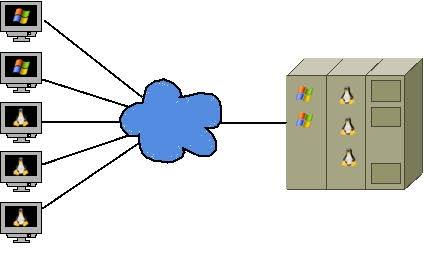
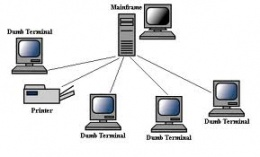

Evolucion Sistemas Computacionales
¿Qué es un Mainframe?Un Mainframe es un computador de gran capacidad diseñado para procesar enormes cantidades de datos y ejecutar múltiples operaciones de manera simultánea, segura y confiable. Los sistemas Mainframe son utilizados principalmente por bancos, entidades gubernamentales, compañías de seguros, aerolíneas y grandes organizaciones que requieren alta disponibilidad y procesamiento continuo de información. Características principales
Origen: Los sistemas Mainframe comenzaron a desarrollarse
y popularizarse durante la década de 1960.
|
|
 
 |
¿Qué es una Terminal Bruta?Una Terminal Bruta (Dumb Terminal) es un dispositivo utilizado para interactuar con un computador central, que no posee capacidad significativa de procesamiento ni almacenamiento propio. Su función principal es permitir al usuario ingresar datos y visualizar la información que es procesada por el computador central. La terminal bruta depende completamente del computador central o Mainframe para ejecutar programas, realizar cálculos y almacenar información. El terminal únicamente transmite las entradas del usuario y muestra los resultados recibidos. Características principales
Año: Las terminales brutas se popularizaron durante
las décadas de 1960 y 1970, especialmente con el uso
de sistemas de tiempo compartido y computadores centrales.
Ejemplo: Una terminal conectada a un Mainframe que
permite a los usuarios consultar información y ejecutar aplicaciones
almacenadas y procesadas en el computador central.
|
¿Qué es un Cliente?Un cliente es un dispositivo, programa o aplicación que solicita servicios, recursos o información a otro computador denominado servidor. El cliente permite al usuario interactuar con los servicios proporcionados por el servidor a través de una red. En una arquitectura cliente-servidor, el cliente realiza una solicitud y el servidor la procesa y devuelve una respuesta. Esta arquitectura es fundamental para aplicaciones web, sistemas empresariales, bases de datos y servicios en Internet. Características principales
Año: El modelo cliente-servidor se
consolidó durante la década de 1980, con la expansión
de las redes de computadores y los sistemas distribuidos.
Ejemplo: Cuando un usuario abre un sitio web desde
un navegador, el navegador actúa como cliente y
solicita información al servidor web.
|
.accordion-body, though the transition does limit
overflow.